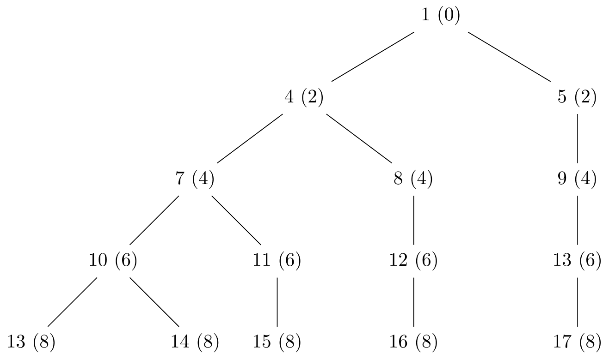

1 Basic Facts and Notions of Logic and Set Theory
This chapter introduces the concepts and terminology of logic and set theory.
What sets aside mathematics from other disciplines is its reliance on proof (Bilaniuk 2009, ix). But what is a proof? In an informal way a proof is any reasoned argument accepted as such by other mathematicians (Bilaniuk 2009, ix).
In that sense mathematical logic is concerned with formalizing and analyzing the kinds of reasoning used in the rest of mathematics (Bilaniuk 2009, ix).
1.1 Propositional logic
Propositional logic attempts to make precise the relationships that certain connectives like not, and, or, and if … then (Bilaniuk 2009, x).
1.1.1 Language
First we will define the formal language of propositional logic, \(\mathcal{L}_P\), by specifying the symbols and formulas
Definition 1.1 (Symbols of \(\mathcal{L}_P\)) The symbols of \(\mathcal{L}_P\) are:
- Parentheses: \((\) and \()\)
- Connectives: \(\neg\) and \(\Longrightarrow\)
- Atomic formulas: \(A_0, A_1, A_2, \ldots, A_n, \ldots\)
Then we specify the ways in which the symbols of \(\mathcal{L}_P\) can be put together.
Definition 1.2 (Formulas of \(\mathcal{L}_P\)) The formulas of \(\mathcal{L}_P\) are those finite sequences or strings of the symbols given in Definition 1.1 which satisfy the following rules:
- Every atomic formula is a formula
- If \(\alpha\) is a formula, then \((\neg \alpha)\) is a formula
- If \(\alpha\) and \(\beta\) are formulas, then \((\alpha \Longrightarrow \beta)\) is a formula
- No other sequence of symbols is a formula
In Definition 1.1 and Definition 1.2 parentheses are just punctuation where their purpose is to group other symbols together, \(\neg\) and \(\Longrightarrow\) represent the connectives not and if … then and the atomic formulas represent statements that cannot be broken down any further using our connectives. Finally we specify that a well formed formula can only be obtained by the first 3 rules pointed out in Definition 1.21.
Exercise 1.1 Show that every formula of \(\mathcal{L}_P\) has the same number of left parentheses as it has of right parentheses.
Solution 1.1. By strong induction on \(n\), the number of connectives (occurrences of \(\neg\) or \(\Longrightarrow\)) in a formula \(\varphi\) of \(\mathcal{L}_P\)
Base step \((n = 0)\): If \(\varphi\) is a formula of \(\mathcal{L}_P\) with no connectives by Definition 1.2 is an atomic formula. Since an atomic formula has no parentheses is has the same left as right parentheses.
Induction hypothesis \((n \leq k)\): Assume a formula with \(n \leq k\) connectives has the same left as right parentheses.
Induction step \((n = k + 1)\): Suppose \(\varphi\) is a formula with \(n = k + 1\) connectives. From Definition 1.2 \(\varphi\) must be either:
\((\neg \alpha)\) for some formula \(\alpha\) with \(k\) connectives.
- By the induction hypothesis \(\alpha\) has the same left as right parentheses so \((\neg \alpha)\) also have the same left as right parentheses.
\((\beta \Longrightarrow \gamma)\) for some formulas \(\beta\) and \(\gamma\) with \(\leq k\) connectives each.
- By the induction hypothesis \(\beta\) and \(\gamma\) have the same left as right parentheses so \((\beta \Longrightarrow \gamma)\) also has the same left as right parentheses.
Exercise 1.2 Suppose \(\alpha\) is any formula of \(\mathcal{L}_P\). Let \(l(\alpha)\) be the length of \(\alpha\) as a sequence of symbols and let \(p(\alpha)\) be the number of parentheses (counting both left and right parentheses) in \(\alpha\). What are the minimum and maximum values of \(\frac{p(\alpha)}{l(\alpha)}\)?
Solution 1.2. The minimum value of \(p(\alpha)\) is \(0\) when \(\alpha\) is an atomic formula. Therefore the minimum value of \(\frac{p(\alpha)}{l(\alpha)}\) is \(0\) because \(p(\alpha) \geq 0\) and \(l(\alpha) \geq 1\).
In the case of other values lets inspect the possible values of \(p(\alpha)\) and \(l(\alpha)\):
For \(p(\alpha)\) the possible values are \(0, 2, 4, \ldots, 2m, \ldots\).
For \(l(\alpha)\) we can begin with an atomic formula, \(A_0\), and then add \(3\) or \(4\) symbols to create a well formed formula:
- \((\neg A_0)\)
- \((A_0 \Longrightarrow A_1)\)
Where the possible values of \(l(\alpha)\) are \(1, 4, 5, 7, 8, \ldots, s - 1, s, s + 1, \ldots\) as it is shown in Figure 1.1 where the majority of duplicate branches with the same lengths are omitted but can be different in relation to \(p(\alpha)\).
Therefore we can examine the leftmost branch.
- For the lefmost branch we have for \(\frac{p(\alpha)}{l(\alpha)} = \frac{0}{1}, \frac{2}{4}, \frac{4}{7}, \frac{6}{10}, \frac{8}{13}, \ldots, \frac{2n}{3n + 1}, \ldots\). Therefore \(\lim_{n \to \infty} \frac{2n}{3n + 1} = \lim_{n \to \infty} \frac{2}{3} = \frac{2}{3}\).
Therefore \(0 \leq \frac{p(\alpha)}{l(\alpha)}\) and \(\frac{p(\alpha)}{l(\alpha)} < \frac{2}{3}\) for the lefmost branch
Exercise 1.3 Suppose \(\alpha\) is any formula of \(\mathcal{L}_P\). Let \(s(\alpha)\) be the number of atomic formulas in \(\alpha\) (counting repetitions) and let \(c(\alpha)\) be the number of occurrences of \(\Longrightarrow\) in \(\alpha\). Show that \(s(\alpha) = c(\alpha) + 1\).
Solution 1.3. By strong induction on \(n\), the number of connectives (occurrences of \(\neg\) or \(\Longrightarrow\)) in a formula \(\varphi\) of \(\mathcal{L}_P\)
Base step \((n = 0)\): If \(\varphi\) is a formula of \(\mathcal{L}_P\) with no connectives by Definition 1.2 is an atomic formula. Since an atomic formula has no \(\Longrightarrow\) then \(c(\varphi) = 0\) and \(s(\varphi) = 1\) and so \(s(\varphi) = c(\varphi) + 1\).
Induction hypothesis \((n \leq k)\): Assume that for a formula with \(n \leq k\) connectives \(s(\varphi) = c(\varphi) + 1\).
Induction step \((n = k + 1)\): Suppose \(\varphi\) is a formula with \(n = k + 1\) connectives. From Definition 1.2 \(\varphi\) must be either:
\((\neg \alpha)\) for some formula \(\alpha\) with \(k\) connectives.
- By the induction hypothesis for \(\alpha\) we have that \(s(\alpha) = c(\alpha) + 1\). Therefore for \((\neg \alpha)\) we have also that \(s((\neg \alpha)) = c((\neg \alpha)) + 1\).
\((\beta \Longrightarrow \gamma)\) for some formulas \(\beta\) and \(\gamma\) with \(\leq k\) connectives each.
- By the induction hypothesis for \(\beta\) and \(\gamma\) we have that \(s(\beta) = c(\beta) + 1\) and \(s(\gamma) = c(\gamma) + 1\). Therefore \(s((\beta \Longrightarrow \gamma)) = c(\beta) + c(\gamma) + 1 + 1\). But \(c(\beta) + c(\gamma) + 1 = c((\beta \Longrightarrow \gamma))\) so \(s((\beta \Longrightarrow \gamma)) = c((\beta \Longrightarrow \gamma)) + 1\)
- By the induction hypothesis for \(\beta\) and \(\gamma\) we have that \(s(\beta) = c(\beta) + 1\) and \(s(\gamma) = c(\gamma) + 1\). Therefore \(s((\beta \Longrightarrow \gamma)) = c(\beta) + c(\gamma) + 1 + 1\). But \(c(\beta) + c(\gamma) + 1 = c((\beta \Longrightarrow \gamma))\) so \(s((\beta \Longrightarrow \gamma)) = c((\beta \Longrightarrow \gamma)) + 1\)
Exercise 1.4 What are the possible lengths of formulas of \(\mathcal{L}_P\)? Prove it.
Solution 1.4. Using Solution 1.2 and Figure 1.1 the possible possible lengths of formulas of \(\mathcal{L}_P\) are \(1, 4, 5, 7, 8, \ldots, s - 1, s, s + 1, \ldots\).
Exercise 1.5 Find a way for doing without parentheses or other punctuation symbols in defining a formal language for \(\mathcal{L}_P\).
Solution 1.5. See (Łukasiewicz and Borkowski 1970, 180) which is called Lukasiewicz or Polish notation
In Polish notation, logical operators are placed before their operands. This prefix positioning eliminates the need for parentheses, as the order of operations is strictly determined by the operator sequence.
So using Definition 1.2 we have that:
- Every atomic formula is a formula
- If \(\alpha\) is a formula, then \(\neg \alpha\) is a formula
- If \(\alpha\) and \(\beta\) are formulas, then \(\Longrightarrow \alpha \beta\) is a formula
- No other sequence of symbols is a formula
For example \((((\neg \alpha) \Longrightarrow \beta) \Longrightarrow (\neg \gamma))\) can be written using Polish and modern notation as \(\Longrightarrow \Longrightarrow \neg \alpha \beta \neg \gamma\)
Also Polish notation is not ambiguous. For example:
\(((\alpha \Longrightarrow \beta) \Longrightarrow \gamma)\) is written as \(\Longrightarrow \Longrightarrow \alpha \beta \gamma\)
\((\alpha \Longrightarrow (\beta \Longrightarrow \gamma))\) is written as \(\Longrightarrow \alpha \Longrightarrow \beta \gamma\)
Exercise 1.6 Show that the set of formulas of \(\mathcal{L}_P\) is countable.
Solution 1.6. Pending
1.1.1.1 Informal conventions
We will use the symbols \(\land\), \(\lor\), and \(\iff\) to represent and, or and if and only if respectively. Since they are not among the symbols of \(\mathcal{L}_P\), we will use them as abbreviations for certain constructions involving only \(\neg\) and \(\Longrightarrow\). Namely:
- \((\alpha \land \beta)\) is short for \((\neg(\alpha \Longrightarrow (\neg \beta)))\),
- \((\alpha \lor \beta)\) is short for \((( \neg \alpha) \Longrightarrow \beta)\), and
- \((\alpha \iff \beta)\) is short for \(((\alpha \Longrightarrow \beta) \land (\beta \Longrightarrow \alpha))\)
Definition 1.3 (Subformulas) Suppose \(\varphi\) is a formula of \(\mathcal{L}_p\). The set of subformulas of \(\varphi\), \(S(\varphi)\), is defined as follows:
If \(\varphi\) is an atomic formula then \(S(\varphi) = \{ \varphi \}\)
If \(\varphi\) is \((\neg \alpha)\) then \(S(\varphi) = S(\alpha) \cup \{ (\neg \alpha) \}\)
If \(\varphi\) is \((\alpha \Longrightarrow \beta)\) then \(S(\varphi) = S(\alpha) \cup S(\beta) \cup \{ (\alpha \Longrightarrow \beta) \}\)
Exercise 1.7 Find all the subformulas of each of the following formulas.
- \((\neg((\neg A_{56}) \Longrightarrow A_{56}))\)
- \((A_9 \Longrightarrow (A_8 \Longrightarrow (\neg (A_{78} \Longrightarrow (\neg (\neg A_0))))))\)
- \((((\neg A_0) \land (\neg A_1)) \iff (\neg (A_0 \lor A_1)))\)
Solution 1.7. \[\begin{split} S((\neg((\neg A_{56}) \Longrightarrow A_{56}))) & = S(((\neg A_{56}) \Longrightarrow A_{56})) \cup \{ (\neg((\neg A_{56}) \Longrightarrow A_{56})) \} \\ & = \{ A_{56}, (\neg A_{56}), ((\neg A_{56}) \Longrightarrow A_{56}), \\ & \;\;\;\;\;\; (\neg((\neg A_{56}) \Longrightarrow A_{56})) \} \end{split}\]
\[\begin{split} S((A_9 \Longrightarrow (A_8 \Longrightarrow (\neg (A_{78} \Longrightarrow (\neg (\neg A_0))))))) & = S(A_9) \cup S((A_8 \Longrightarrow (\neg (A_{78} \Longrightarrow (\neg (\neg A_0)))))) \cup \{ (A_9 \Longrightarrow (A_8 \Longrightarrow (\neg (A_{78} \Longrightarrow (\neg (\neg A_0)))))) \} \\ & = \{ A_9, A_8, A_{78}, A_0, (\neg A_0), \\ & \;\;\;\;\;\; (\neg(\neg A_0)), (A_{78} \Longrightarrow (\neg (\neg A_0))), \\ & \;\;\;\;\;\; (\neg (A_{78} \Longrightarrow (\neg (\neg A_0)))), \\ & \;\;\;\;\;\; (A_8 \Longrightarrow (\neg (A_{78} \Longrightarrow (\neg (\neg A_0))))), \\ & \;\;\;\;\;\; (A_9 \Longrightarrow (A_8 \Longrightarrow (\neg (A_{78} \Longrightarrow (\neg (\neg A_0)))))) \} \end{split}\]
Let \(\varphi = (((\neg A_0) \land (\neg A_1)) \Longrightarrow (\neg (A_0 \lor A_1)))\) and \(\sigma = ((\neg (A_0 \lor A_1)) \Longrightarrow ((\neg A_0) \land (\neg A_1)))\)
\[\begin{split} S((((\neg A_0) \land (\neg A_1)) \iff (\neg (A_0 \lor A_1)))) & = S((\varphi \Longrightarrow (\neg \sigma))) \cup \{ (\neg (\varphi \Longrightarrow (\neg \sigma)))\} \\ & = \{ A_0, A_1, (\neg A_0), (\neg A_1), (\neg (\neg A_1) ), \\ & \;\;\;\;\;\; (A_0 \lor A_1), ((\neg A_0) \Longrightarrow (\neg (\neg A_1))), \\ & \;\;\;\;\;\; (\neg (A_0 \lor A_1)), ((\neg A_0) \land (\neg A_1)) \\ & \;\;\;\;\;\; \sigma, (\neg \sigma), \varphi, \\ & \;\;\;\;\;\; (\varphi \Longrightarrow (\neg \sigma)), \\ & \;\;\;\;\;\; (\neg(\varphi \Longrightarrow (\neg \sigma))) \} \end{split}\]
1.1.1.2 Unique Readability
To ensure that the formulas of \(\mathcal{L}_p\) are unambiguous (can be read in only one way according to the rules given in Definition 1.2) one must add to Definition 1.1 the requirement that all the symbols of \(\mathcal{L}_p\) are distinct and that no symbol is a subsequence of any other symbol.
Theorem 1.1 (Unique Readability) A formula of \(\mathcal{L}_p\) must satisfy exactly one of the first 3 conditions in Definition 1.2.
Proof. By strong induction on \(n\), the number of connectives (occurrences of \(\neg\) or \(\Longrightarrow\)) in a formula \(\varphi\) of \(\mathcal{L}_P\)
Base step \((n = 0)\): If \(\varphi\) is a formula of \(\mathcal{L}_P\) with no connectives by Definition 1.2 is an atomic formula. Since an atomic formula has no connectives it can not of the form \((\neg \varphi)\) or \((\alpha \Longrightarrow \beta)\).
Induction hypothesis \((n \leq k)\): Assume a formula with \(n \leq k\) connectives must satisfy exactly one of the first 3 conditions in Definition 1.2.
Induction step \((n = k + 1)\): Suppose \(\varphi\) is a formula with \(n = k + 1\) connectives. From Definition 1.2 \(\varphi\) must be either:
\((\neg \alpha)\) for some formula \(\alpha\) with \(k\) connectives.
By the induction hypothesis \(\alpha\) must satisfy exactly one of the first 3 conditions in Definition 1.2.
Because \(\alpha\) satisfy exactly one of the first 3 conditions in Definition 1.2 then \((\neg \alpha)\) can’t be an atomic formula because an atomic formula doesn’t have connectives.
Now assume that \((\neg \alpha)\) can be expressed as \((\beta \Longrightarrow \gamma)\). Then \(\neg \alpha\) will be equal to \(\beta \Longrightarrow \gamma\). However \(\alpha\) satisfy exactly one of the first 3 conditions in Definition 1.2 so it will be impossible that \(\neg \alpha\) and \(\beta \Longrightarrow \gamma\) are equal.
- Therefore \((\neg \alpha)\) satisfy exactly the 2 condition in Definition 1.2.
\((\beta \Longrightarrow \gamma)\) for some formulas \(\beta\) and \(\gamma\) with \(\leq k\) connectives each.
By the induction hypothesis \(\beta\) and \(\gamma\) must satisfy exactly one of the first 3 conditions in Definition 1.2.
Because \(\beta\) and \(\gamma\) satisfy exactly one of the first 3 conditions in Definition 1.2 then \((\beta \Longrightarrow \gamma)\) can’t be an atomic formula because an atomic formula doesn’t have connectives.
Now assume that \((\beta \Longrightarrow \gamma)\) can be expressed as \((\neg \sigma)\). Then \(\neg \sigma\) will be equal to \(\beta \Longrightarrow \gamma\). However \(\beta\) and \(\gamma\) satisfy exactly one of the first 3 conditions in Definition 1.2 so it will be impossible that \(\neg \sigma\) and \(\beta \Longrightarrow \gamma\) are equal.
- Therefore \((\beta \Longrightarrow \gamma)\) satisfy exactly the 3 condition in Definition 1.2.
See (Church 1996, 70) for more details.↩︎